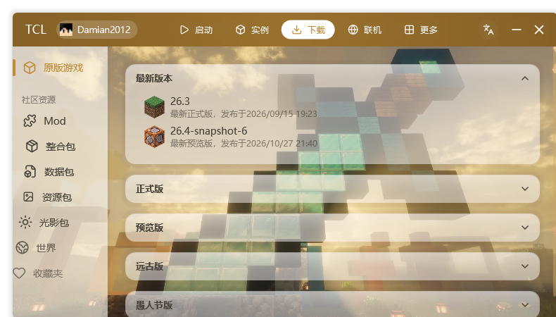
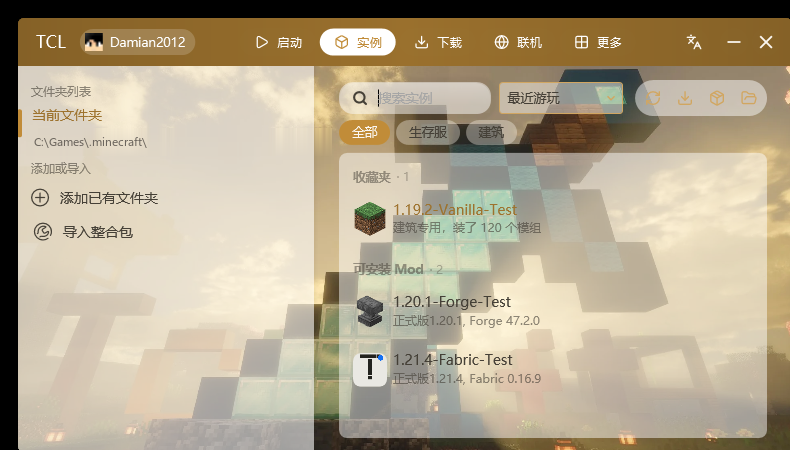
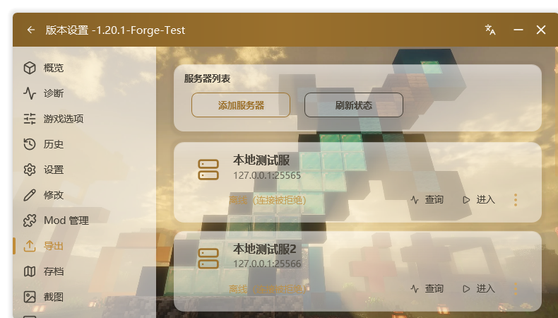
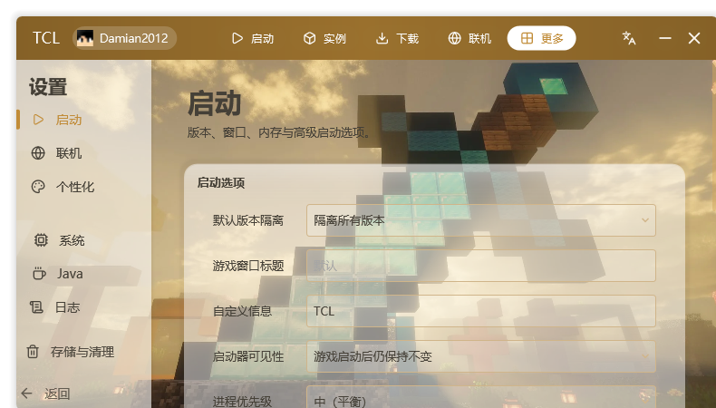
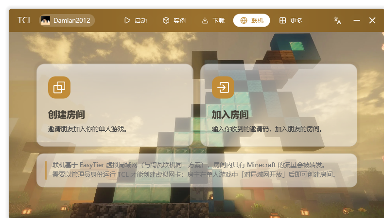

版本安装与加载器
原版一键安装，自动匹配 Java 与资源索引。Forge、NeoForge、Fabric、OptiFine、LiteLoader 都能直接装，安装失败会给出可读的原因，而不是一段堆栈。
ForgeNeoForgeFabricOptiFineLiteLoader
启动器不该是一个需要研究的东西。打开、选版本、点启动，剩下的交给它。
启动核心与工具库以压缩快照内嵌进 exe，不需要安装、不需要运行库、不会在系统里留下第二份 DLL。拷到 U 盘也能跑。
延迟初始化、资源字典按需加载、字体与网络预热放在后台。冷启动约 2 秒，空闲时 CPU 占用接近 0。
Win11 风格的半透明界面，支持壁纸、背景视频、音乐与主题色；全部可关，也可以只留一个干净的列表。
从原版安装到整合包迁移，从正版登录到联机开房，日常用得到的部分都做完整了。
原版一键安装，自动匹配 Java 与资源索引。Forge、NeoForge、Fabric、OptiFine、LiteLoader 都能直接装，安装失败会给出可读的原因，而不是一段堆栈。
支持 CurseForge、Modrinth、MCBBS、MultiMC、HMCL 五种整合包格式。拖入压缩包后先显示名称、图标、游戏版本与加载器，确认无误再安装。
每个版本独立的 Mod、存档、配置与 Java 设置，互不污染。支持按文件夹归类。
微软账号设备码登录、离线登录、外置 Authlib 登录。账户卡片可切换、导入导出。
用 WPF 3D 渲染真实模型，自动判断经典与纤细手臂，可拖拽旋转。正版皮肤只读预览。
基于 EasyTier 虚拟局域网，创建房间或输入邀请码即可加入好友的单人游戏。只有 Minecraft 的流量会被转发。
CurseForge / Modrinth 资源搜索与断点续传；缓存分类统计后按需清理，绝不碰存档与配置；日志与崩溃分析用中文说人话。
所有截图都来自真实运行，没有渲染图。





界面会随壁纸与主题色变化，截图仅为其中一种配色。
不需要。启动器会扫描系统里已有的 Java，并在需要时下载与游戏版本匹配的运行时。也可以在「设置 → Java」里手动指定路径。
支持。开源版默认不内置微软凭据：可自行设置环境变量 TCL_MS_CLIENT_ID 开启，或加入 QQ 群 1081955336 获取内置正版登录的完整版。CurseForge 下载可在设置里填写自己的 API Key；离线登录不受影响。
不会。整合包会安装为一个独立实例，Mod、配置与存档都在自己的目录里。安装前会先解析名称、图标、游戏版本与加载器并让你确认。
代码签名证书需要按年付费，个人项目没有购买。你可以对照下载页的 SHA-256 校验文件，或使用 Visual Studio 从源码自行构建。
不会。启动器没有统计上报；只有在你主动使用下载、联机、皮肤或登录功能时，才会访问对应的官方或第三方服务。
代码以 MIT 协议开源，保留版权声明即可使用与修改。内置的第三方组件遵循各自许可证，详见仓库中的 THIRD-PARTY-NOTICES。
完整版在开源版的基础上，额外内置微软正版登录（设备码授权，无需自行配置）。CurseForge 社区资源下载可在「设置 → 下载」中自行填写 API Key。
出于合规考虑，完整版不提供公开下载。请加入 QQ 群，在群文件中获取：
群内同时提供更新通知、完整版发布与问题反馈。